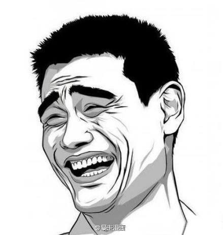
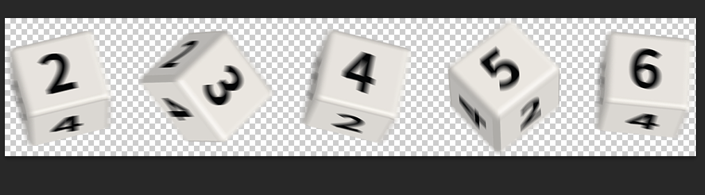
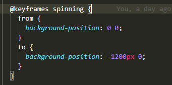
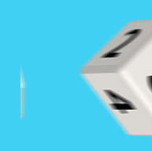
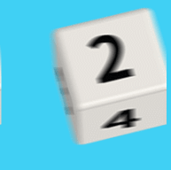
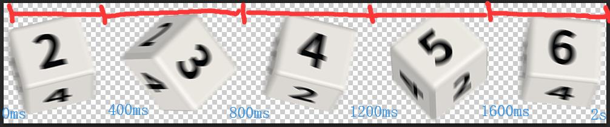
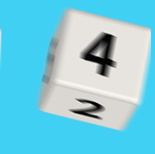
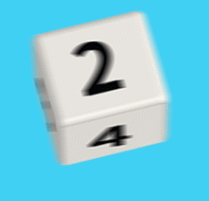

昨天火急火燎地接到一个任务，说是要做一个掷骰子的游戏，关于掷骰子期间的过渡动画，我本来是想用css 3d制作一个立体的骰子，然后叫UI给6张平面图贴上去。再用translate3d来操作。然而UI考虑得十分周到，直接就给了我一个雪碧图，并告诉我在photoshop中可以用帧动画来播放几张图片，达到类似gif的效果，程序上实现也大抵如此吧。
卧槽真是个神奇的UI boy。

于是我顺着他的思路，用上了animation在timing-function中的steps属性。
先来看看UI给的图吧，是这样的：（注：图片宽度1200px）

如果要播放这张图片的话，很明显是分为五个帧，然后定义一个动画，background-position从（0,0）到（-图片的宽度,0)。首先要明白background-position的数值指的是背景图的左上角顶点到容器左上角顶点的x,y距离。x,y正数值越大，背景图越向右下角偏移。
所以动画的代码如下：

我们先来播放一下看看效果，设置animation:spinning 2s linear infinite,效果如下：

可以看到是从左到右依次播放：2,3,4,5,6,2,3,4,5,6....。类似跑马灯的效果，既然说到这里就顺便提一下alternate,众所周知infinite linear定义的是0 -> 100 ->0 -> 100 -> 0 -> 100......（始终正向）。而infinite alternate定义的是0 -> 100 -> 100 ->0 -> 0 -> 100......(一下正向一下反向)。修改animation:spinning 2s alternate infinite,效果如下：

但是这都不是我们需要的效果，因为帧动画的关键在于“瞬变”。在animation的timing-function中，有一个steps(n)属性。表示将动画分为n帧。比如说，这里我们定义animation:spinning 2s steps(5) infinite。它在这个例子中表示的效果如下：

在0~400ms时，position：0 0；400ms~800ms,position：-240px 0。800ms~1200ms，position:-480px 0，以此类推。需要注意的是，比如400ms时position为0 0，在401ms时position就突变成-240px 0，即是说position是瞬变的。这个位置变化没有过渡效果，这就是steps的特点：阶跃性。
此时效果如下：

400ms一帧当然太慢了，我们把时间适当压缩一下。比如总动画时长为300ms,那就是60ms一帧，分5帧播放完，这样看起来就会流畅不少。最终效果如下：
